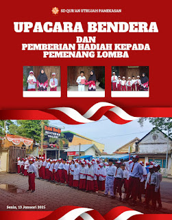

Upacara Bendera & Pemberian Hadiah Lomba
Santri Utrujah Pamekasan mengikuti upacara bendera yang dirangkai dengan pemberian hadiah bagi para pemenang lomba, sebagai bentuk apresiasi atas semangat belajar dan berprestasi.
Baca Selengkapnya →